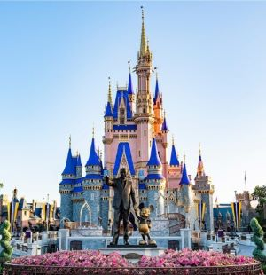
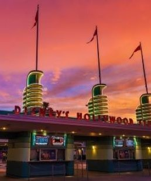
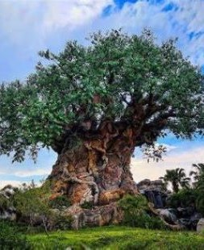
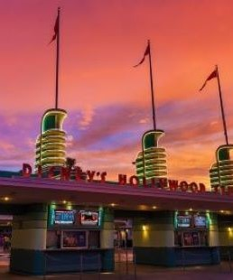
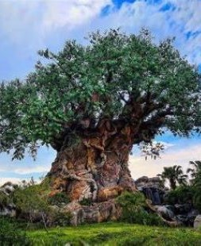
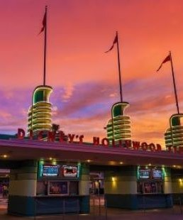
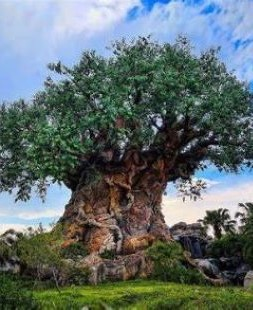

Parques Temáticos
Os parques da Disney são atrações turísticas que trazem milhares de turistas ao redor do mundo para ter um tempo de lazer com família e amigos. A primeira Disneyland foi inaugurada em Anaheim, na Califórnia, EUA, em 1955, e tornou-se um sucesso, fazendo sonhar com a criação de empreendimentos semelhantes noutras zonas dos EUA e até fora. Atualmente, existem seis parques temáticos da Disney que recebem uma média de 150 milhões de pessoas por ano. Acompanhe esses parques e suas localizações.

 





- Magic Kingdom, em Orlando
- Epcot, em Orlando
- Hollywood Studios, em Orlando
- Animal Kingdom, em Orlando
Para mais informações sobre cada parque, clique aqui.